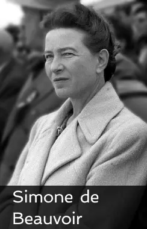

Galerie du féminisme


Emma Watson is an british actress born on April 15, 1990 who became world-famous with the role of Hermione Granger in the Harry Potter saga. The actress has made many feminist interventions, participeted at many evennement for gender equality, etc… She’s also an UN Women
Goodwill Ambassador and participated to the CAMFED campaign and HeForShe campaign.

Rosa Parks, from her complete name Rosa Louise McCauley Parks, was born on February 4, 1913 in Alabama and died on October 24, 2005 at 92 years old in Michigan. She’s a civil and human rights activist, she fighted during many years against racial segregation. In 1955
Rosa Parks refused to give up his seat to a white woman on the bus, it has value for him a fine and it was thereafter that she began her civil rights struggle.

Olympe de Gouges, from her real name Marie Gouze, was born on May 7, 1748 and executed the 3 november 1793, at 45 years old, in France and was an writer, philosopher, journalist and politician. But she’s above all one of the largest, if not the largest figures of feminism in
France, she has written a lot in favor of women's rights including the Declaration of the Rights of Women and Citizens in 1791.

Simone de Beauvoir was born on January 9, 1908 and died one April 14, 1986, at 78 years old in Paris, France. She’s a French philosopher, novelist and essayist. She has written many essays but one of the most famous is The Second Sex in 1949. She also participated at the end of
the 70’s at the Women's Liberation Movement.

Simone Veil was born on July 13, 1927 and died on June 30, 2017 at 89 years old in France, she’s a French magistrate and politician. She has been Minister of Health, President of the European Parliament, Member of the European Parliament, "Minister of State, Minister of Social Affairs, Health
and Urban Affairs" and finally a member of the French Constitutional Council. Simone Veil is notably known for her fight for the decriminalization of abortion from 1974 to 1975.

Elizabeth Cady Stanton was born on November 12, 1815 and died on October 26, 1902 at 86 years old, in the United-States, she’s an American writer, abolitionist and suffragist. She’s become a feminist figure in the United States thanks to his fight for the right to vote and the
women’s right. In particular, together with other feminists, she created the first convention on women's rights, the Seneca Falls convention in 1848.
Glossary
Suffragettes : They are the activists of the women's suffrage movement in the UK.
HeForShe : It’s a campaign launched by UN Women in 2014 to fight for gender equality and women's rights, all through actions led by men. Many celebrities participated like Emma Watson, Russell Crowe, Prince Harry or even the Obama couple.
CAMFED : It’s an organization created in 1993 to help poor countries in Africa by improving the school conditions of young girls. Several personalities participated, Emma Watson, Morgan Freeman, Bill Clinton and Rihanna for instance.
The Second Sex : It is a feminist essay written by Simone de Beauvoir in 1949, her essay addresses many of the issues on which women are considered inferior to men and why.
Women's Liberation Movement : It is a feminist movement composed exclusely of women launched in 1970 advocating the freedom of women and their bodies. Many women writers have joined the movement such as Simone de Beauvoir, Annie Sugier and Anne Zelensky.
Racial segregation : We talk about racial segregation when the state authorizes or applies discriminatory actions against an ethnic group.